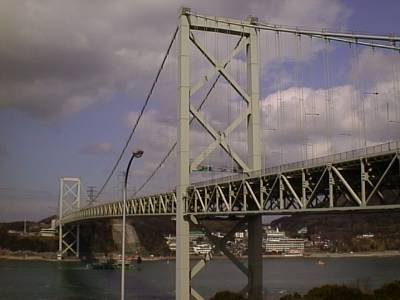
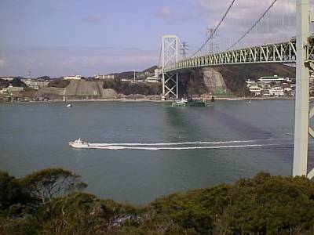
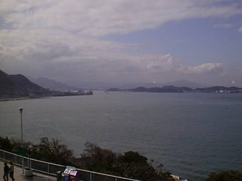

my treasure box
－1999/3/8－
今度は帰宅です。ひたすら東に向かいます。九州自動車道のめかりパーキングエリアで、ふくうに丼を食べ、大満足の矢先に・・・
| ○福岡県福岡市 発 |
| ＝＞ 国道３号線 －＞ 九州自動車道 －＞ 国道４３５号線 ＝＞ |
| ○山口県美祢市 着 |
～関門橋・関門海峡～
とりあえず、高速でも使ってみようかなと、早速九州自動車道へ。関門橋の目の前にめかりパーキングエリアがあったので、よってみました。

見事な関門橋です。立派。九州にきたなという感じがします。

橋の下ではひっきりなしに船が横切っていきます。

西の方に目を向けた写真。
さて、出発です。関門海峡を抜け、しばらく進むと、キュルキュル変な音がします。そして・・・。
煙が・・・。
まずいと思い、すかさず車を路肩に寄せ、エンジンを止めてボンネットを開けてみました。エンジンから煙が吹き出しています。車の下からはわずかではありますがオイルが・・・。オーバーヒートか・・・。
高速の非常電話で電話をかけ、ＪＡＦを呼びました。高速の非常電話で電話をかけるというのも貴重な経験だよなあと思いながら。
しばらくして、ＪＡＦが来ました。とりあえずミラ号をトラックに乗せて、近くの美祢インターチェンジで降ります。それから近くのＴＯＹＯＴＡのＮＥＴＺ美祢店に持ち込みます。ダイハツの車なので、ダイハツのディーラーの方がいいのですが、結局ダイハツの店は休みで、この店で修理をしてくれるように頼みました。
私はその近くにあった、美祢グランドホテルに泊まりました。
さてさて、これからどうなることやら・・・。
とは思いつつも、一週間ぶりのベットで、熟睡。